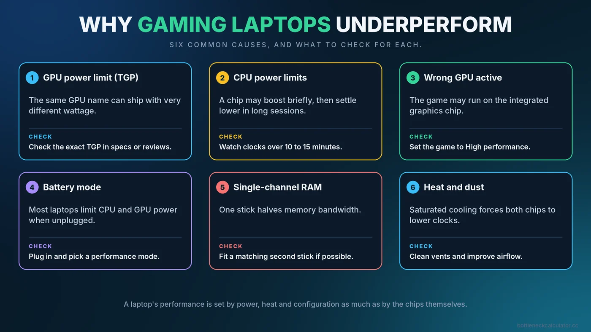
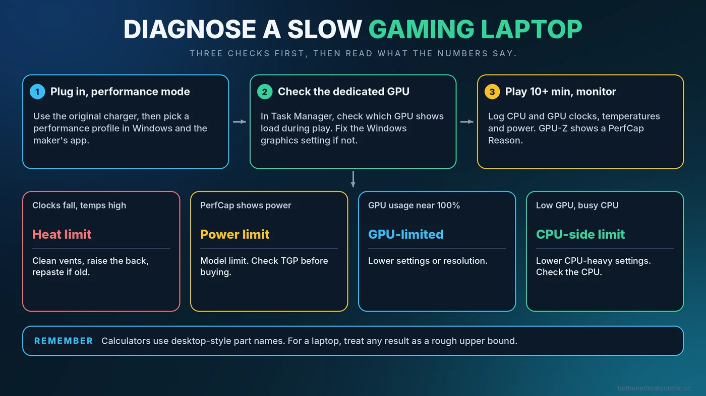

Gaming Laptop Bottleneck: Why Your Laptop GPU Underperforms and How to Fix It
A graphics card with the same name in a laptop and a desktop can perform very differently. Laptops have strict limits on power and heat, plus design choices that can quietly hold back both the CPU and the GPU. This guide shows where a laptop usually loses performance, how to check each cause, and which fixes are worth trying.

Why Laptops Behave Differently From Desktops
A desktop has room for large coolers and a power supply that can feed its parts generously. A laptop must fit the CPU, GPU, cooling and battery into a thin shell, so manufacturers set power and temperature limits to keep it safe and quiet. Those limits are the main reason one laptop with a given GPU is noticeably faster than another with the same GPU name.
It also means that the usual desktop advice, such as "buy a stronger part", only works if the laptop can actually feed and cool it. Often the real limit is not the chip but what the chassis allows.
Cause 1: The GPU's Power Limit (TGP)
Laptop graphics cards are sold with a range of total graphics power (TGP) settings. The same model name can be configured with a low-power or a high-power limit, and the difference can amount to dozens of watts and a clear difference in frame rate. Two laptops that both advertise the same graphics card can therefore perform differently.
What to do: Before buying, check the TGP of the exact configuration in the maker's specifications or in reviews of that model. On a laptop you already own, use a monitoring tool to see the power the GPU actually draws and the limit it reports.
Cause 2: CPU Power Limits and Heat
Laptop processors run on short-term and long-term power limits. A chip may boost high for a few seconds and then settle at a lower sustained level to stay cool. In a long gaming session, this can mean lower clocks than the spec sheet suggests. Our article on thermal throttling vs CPU bottleneck shows how to tell heat limits from true CPU limits, which is a vital distinction on laptops.
Cause 3: The Laptop Is Not Using the Dedicated GPU
Many laptops have an integrated graphics chip and a dedicated one. Windows or the maker's software decides which one runs each program. If a game lands on the integrated chip, you will see low FPS and almost no GPU activity on the dedicated card.
- Open Task Manager, go to Performance, and check which GPU shows activity while the game runs.
- In Windows Settings, go to System, Display, Graphics, add the game and set it to High performance.
- Check the graphics driver control panel and the maker's utility for per-game graphics settings.
- Some laptops have a switch, often called a MUX switch, that sends the dedicated GPU straight to the screen. If yours has one, enabling it can improve performance, though it may require a restart.
Cause 4: Battery Mode and Power Profiles
Most laptops sharply limit performance when unplugged. For gaming, connect the original charger and choose a performance mode in Windows and in the maker's control app. A smaller or underpowered charger can also stop the laptop from reaching full speed, so use the one supplied with it.
Cause 5: Single-Channel RAM
Some laptops ship with only one memory stick, which runs in single channel and halves memory bandwidth. This hurts integrated graphics most, but it can also reduce CPU performance in games. Check Task Manager or CPU-Z to see how many sticks are installed and whether memory is dual channel. If a second matching stick can be fitted, it is often a cheap and effective upgrade. See our guide to how RAM affects gaming performance for what to look for.
Cause 6: Heat and Dust
When the cooling system saturates, both the CPU and GPU lower their clocks. Dust in the vents, aged thermal paste and poor airflow underneath the laptop all contribute.
- Use the laptop on a hard, flat surface rather than a bed or lap.
- Raise the back slightly or use a cooling stand to improve airflow.
- Clean the vents with compressed air if your warranty allows.
- Consider professional cleaning and repasting for an older machine.
How to Diagnose What Is Holding Your Laptop Back
- Plug in, select the highest performance mode, and close background apps.
- Open a monitoring tool that shows CPU and GPU clocks, temperature and power. The sensors page in GPU-Z, for example, includes a PerfCap Reason field that tells you whether the card is limited by power or temperature.
- Play for 10 to 15 minutes. Watch whether clocks fall over time. A steady decline points to heat or power limits.
- Check GPU usage. Near 100% means the GPU is the limit. Low usage with busy CPU cores suggests a CPU-side limit. Our PC bottleneck checking guide explains how to read these results.
- Confirm the right GPU is active using Task Manager.

Reading Bottleneck Calculator Results on a Laptop
Calculators, including ours, work from desktop-style part specifications. Our calculator, for example, lists parts by their usual names and uses a built-in performance index for each. A laptop graphics card with the same name may behave like a lower-tier part because of its power limit. Treat any result as a rough upper bound for a laptop and verify with real monitoring. For why results differ from real games, see how accurate bottleneck calculators are.
What You Can and Cannot Upgrade
| Part | Usually upgradeable? | Notes |
|---|---|---|
| RAM | Often | Check if it is soldered. Fit matched sticks for dual channel. |
| Storage | Often | An M.2 SSD is commonly replaceable. |
| CPU | Rarely | Most laptop CPUs are soldered to the board. |
| GPU | Rarely | Usually fixed, so choose carefully at purchase. |
| Cooling | Cleaning and repasting | Often the cheapest way to regain performance. |
Because the main parts are fixed, buying right matters. Compare the actual TGP, cooling design, RAM configuration and display, not just the GPU name. Use our upgrade checklist as a guide for planning.
Conclusion
A laptop's performance is decided by power, heat and configuration as much as by the chips. Check that the dedicated GPU is in use, run on mains power in a performance mode, keep the vents clean, and make sure memory runs in dual channel. Then see how your CPU and GPU compare using the free Bottleneck Calculator, keeping in mind that a laptop may land below the estimate.
Frequently Asked Questions
Why is my gaming laptop slower than a desktop with the same GPU?
Laptops run the graphics card and CPU at lower power and temperature limits. The same GPU name can be configured with very different power limits, so performance varies.
How do I make my laptop use the dedicated GPU?
Set the game to High performance in Windows graphics settings, check the driver control panel, and use the maker's performance mode. A MUX switch, if available, can send the dedicated GPU straight to the display.
Does plugging in the charger improve gaming performance?
Usually yes. Many laptops limit CPU and GPU power on battery. Use the original charger and a performance power mode for gaming.
Can I upgrade the GPU in a gaming laptop?
In most cases no, because the graphics chip is part of the board. You can often upgrade RAM and storage, and improve cooling by cleaning.
Is a laptop CPU or GPU bottleneck normal?
Some imbalance is normal. Power and heat limits can cause either part to fall short of its potential, so check clocks and temperatures during play.